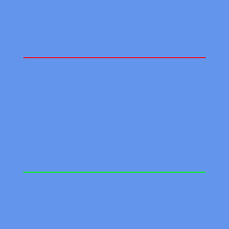
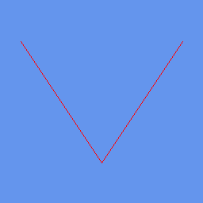
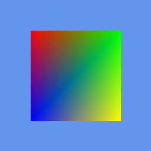

Tutorial 40: Primitive Types
What you’ll learn
- Every
PrimitiveTypevalue and the case each one wins. - Winding order and how it drives back-face culling.
- Choosing between
DrawPrimitivesandDrawIndexedPrimitives. - Converting a vertex or index count into a primitive count.
Before you start — Tutorial 38: Vertex Buffers and Index Buffers — primitive type is an argument to the draw calls covered there. Requires a 3D-capable renderer such as OPENGLES3 or VULKAN; the 2D-only renderers (SDL_RENDERER, DIRECT2D, CANVAS, HTML_DOM, SKIA, BLEND2D, FREEDIRECT, DIRECTX1, GDI, SVG_DOM, OPENVG, NANOVG, PIXIJS) throw on 3D calls.
The PrimitiveType enum controls how the GPU assembles raw vertex data into geometry. Choosing the right primitive type affects both performance and the structure of your vertex or index buffers.
The PrimitiveType enum
CNA exposes the same five primitive types as XNA 4.0:
namespace Microsoft::Xna::Framework::Graphics {
enum class PrimitiveType {
TriangleList, // every 3 vertices form an independent triangle
TriangleStrip, // first triangle = verts 0,1,2; each extra vert adds one triangle
LineList, // every 2 vertices form an independent line segment
LineStrip, // connected polyline; first segment = verts 0,1
PointList, // each vertex is a rendered point (size controlled by rasterizer)
};
} // namespaceWhen to use each
- TriangleList — most common. Each triangle is self-contained, making it easy to combine meshes. Required by
DrawIndexedPrimitivesin most scenes. - TriangleStrip — useful for ribbons, terrain strips, or generated geometry where vertices are shared between adjacent triangles. Uses roughly half the vertex bandwidth of a list for the same geometry.
- LineList — debug overlays, grids, wire frames. Every pair of vertices is independent.
- LineStrip — paths, trajectories, spline previews. One vertex shared between adjacent segments.
- PointList — particle systems, star fields, point clouds.
Three of them, drawn by the real XNA runtime
These frames are from CNA's XNA oracle corpus (tools/xna-oracle/): genuine Microsoft XNA 4.0 runtime output, which CNA's DIRECTX9 renderer is diffed against at --tolerance 0. They show what the same vertex data produces under three different PrimitiveType values.

LineList — each vertex pair is an independent segment, so the two lines are disconnected. Real XNA 4.0 output; CNA's DIRECTX9 renderer matches it pixel-for-pixel.

LineStrip — segments share a vertex, producing one connected polyline. Real XNA 4.0 output; CNA's DIRECTX9 renderer matches it pixel-for-pixel.

TriangleStrip — four vertices become two triangles sharing an edge, filling a quad. Real XNA 4.0 output; CNA's DIRECTX9 renderer matches it pixel-for-pixel.
Winding order and back-face culling
CNA follows the XNA / OpenGL convention: counter-clockwise winding is front-facing. The default RasterizerState culls back faces (CullMode::CullCounterClockwiseFace in XNA terms maps to GL GL_BACK culling with CCW front).
// Triangle with CCW winding (visible from +Z looking toward origin)
VertexPositionColor verts[] = {
{ Vector3(-0.5f, -0.5f, 0.0f), Color::Red }, // bottom-left (index 0)
{ Vector3( 0.5f, -0.5f, 0.0f), Color::Green }, // bottom-right (index 1)
{ Vector3( 0.0f, 0.5f, 0.0f), Color::Blue }, // top-center (index 2)
// 0 -> 1 -> 2 is counter-clockwise when viewed from front: visible
};
// Disable culling to see both sides (e.g. flat sprites)
gd.setRasterizerStateProperty(RasterizerState::CullNone);DrawPrimitives vs DrawIndexedPrimitives
DrawPrimitives reads vertices sequentially; every vertex in the buffer is unique.
DrawIndexedPrimitives reads through an IndexBuffer of uint16_t or uint32_t indices, allowing vertices to be shared between triangles — critical for reducing GPU memory when a mesh has thousands of shared vertices.
// DrawPrimitives — sequential, no index buffer
gd.SetVertexBuffer(vertexBuffer);
gd.DrawPrimitives(PrimitiveType::TriangleList,
/*startVertex=*/0,
/*primitiveCount=*/numTriangles);
// DrawIndexedPrimitives — indexed, requires an IndexBuffer bound
gd.SetVertexBuffer(vertexBuffer);
gd.SetIndexBuffer(indexBuffer);
gd.DrawIndexedPrimitives(PrimitiveType::TriangleList,
/*baseVertex=*/0,
/*startIndex=*/0,
/*primitiveCount=*/numTriangles);Triangle count calculation
The primitiveCount parameter to DrawPrimitives is not the vertex count. Use these formulas:
| PrimitiveType | primitiveCount from N vertices |
|---|---|
| TriangleList | N / 3 |
| TriangleStrip | N - 2 |
| LineList | N / 2 |
| LineStrip | N - 1 |
| PointList | N |
Code example: debug grid with LineList and a triangle-strip ribbon
#include "Microsoft/Xna/Framework/Game.hpp"
#include "Microsoft/Xna/Framework/GraphicsDeviceManager.hpp"
#include "Microsoft/Xna/Framework/Graphics/BasicEffect.hpp"
#include "Microsoft/Xna/Framework/Graphics/VertexBuffer.hpp"
#include "Microsoft/Xna/Framework/Graphics/VertexPositionColor.hpp"
using namespace Microsoft::Xna::Framework;
using namespace Microsoft::Xna::Framework::Graphics;
class PrimitiveDemo final : public Game {
public:
PrimitiveDemo() : graphics_(this) {
graphics_.setPreferredBackBufferWidthProperty(800);
graphics_.setPreferredBackBufferHeightProperty(600);
}
protected:
void LoadContent() override {
effect_ = std::make_unique<BasicEffect>(getGraphicsDeviceProperty());
effect_->VertexColorEnabled = true;
// --- Grid: LineList ---
// 11 horizontal + 11 vertical lines = 22 lines = 44 vertices
std::vector<VertexPositionColor> gridVerts;
gridVerts.reserve(44);
for (int i = 0; i <= 10; ++i) {
float x = -1.0f + i * 0.2f;
gridVerts.push_back({ Vector3(x, -1.0f, 0.0f), Color(80, 80, 80) });
gridVerts.push_back({ Vector3(x, 1.0f, 0.0f), Color(80, 80, 80) });
}
for (int i = 0; i <= 10; ++i) {
float y = -1.0f + i * 0.2f;
gridVerts.push_back({ Vector3(-1.0f, y, 0.0f), Color(80, 80, 80) });
gridVerts.push_back({ Vector3( 1.0f, y, 0.0f), Color(80, 80, 80) });
}
gridLineCount_ = static_cast<int>(gridVerts.size()) / 2; // primitiveCount
gridVB_ = std::make_unique<VertexBuffer>(
getGraphicsDeviceProperty(),
VertexPositionColor::getVertexDeclarationStatic(),
static_cast<int>(gridVerts.size()),
BufferUsage::None);
gridVB_->SetData(gridVerts.data(), static_cast<int>(gridVerts.size()));
// --- Ribbon: TriangleStrip ---
// A sine-wave ribbon with alternating top/bottom vertices
std::vector<VertexPositionColor> ribbonVerts;
const int steps = 40;
for (int i = 0; i <= steps; ++i) {
float t = static_cast<float>(i) / steps;
float x = -0.9f + t * 1.8f;
float cy = std::sin(t * MathHelper::TwoPi) * 0.3f;
ribbonVerts.push_back({ Vector3(x, cy + 0.05f, 0.0f), Color::Yellow });
ribbonVerts.push_back({ Vector3(x, cy - 0.05f, 0.0f), Color::Orange });
}
ribbonVertCount_ = static_cast<int>(ribbonVerts.size());
ribbonVB_ = std::make_unique<VertexBuffer>(
getGraphicsDeviceProperty(),
VertexPositionColor::getVertexDeclarationStatic(),
ribbonVertCount_,
BufferUsage::None);
ribbonVB_->SetData(ribbonVerts.data(), ribbonVertCount_);
}
void Update(GameTime&) override {}
void Draw(const GameTime&) override {
auto& gd = getGraphicsDeviceProperty();
gd.Clear(Color::Black);
effect_->setWorldProperty(Matrix::getIdentityProperty());
effect_->setViewProperty(Matrix::CreateLookAt(
Vector3(0, 0, 2), Vector3::Zero, Vector3::Up));
effect_->setProjectionProperty(Matrix::CreateOrthographic(2.0f, 1.5f, 0.1f, 10.0f));
// Draw grid (LineList)
gd.SetVertexBuffer(gridVB_.get());
for (auto& pass : effect_->getCurrentTechniqueProperty()->getPassesProperty()) {
pass.Apply();
gd.DrawPrimitives(PrimitiveType::LineList, 0, gridLineCount_);
}
// Draw ribbon (TriangleStrip)
// primitiveCount = vertexCount - 2 for a strip
gd.SetVertexBuffer(ribbonVB_.get());
for (auto& pass : effect_->getCurrentTechniqueProperty()->getPassesProperty()) {
pass.Apply();
gd.DrawPrimitives(PrimitiveType::TriangleStrip, 0, ribbonVertCount_ - 2);
}
gd.Present();
}
private:
GraphicsDeviceManager graphics_;
std::unique_ptr<BasicEffect> effect_;
std::unique_ptr<VertexBuffer> gridVB_;
std::unique_ptr<VertexBuffer> ribbonVB_;
int gridLineCount_ = 0;
int ribbonVertCount_ = 0;
};
int main() { PrimitiveDemo game; game.Run(); }Key takeaways
- Pass primitive count, not vertex count, to
DrawPrimitives. - Counter-clockwise winding is front-facing in CNA (matching XNA and OpenGL).
- Use
DrawIndexedPrimitivesfor meshes with shared vertices to save GPU bandwidth. - Disable culling with
RasterizerState::CullNonefor 2D sprites or double-sided geometry.